NYXIA ONLINE
NYXIA ONLINE
Weapons
Weapons come in 6 qualities. The higher the quality, the stronger the weapon and the higher the level it needs. The attack value below is the +0 state; it grows as you upgrade.
CommonUncommonRareEpicLegendaryMythic
Warrior weapons
| Weapon | Quality | Level | Type | Element | Attack (+0) | |
|---|---|---|---|---|---|---|
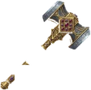 | Heavy Hammer | Common | 1–15 | Mace | Lightning | 48 |
| Rusty Sword | Common | 1–15 | Sword | — | 44 | |
| Iron Axe | Common | 1–15 | Axe | — | 52 | |
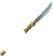 | Serpent's Tip | Uncommon | 15–30 | Long Spear | Poison | 107 |
| Crusher Mace | Uncommon | 15–30 | Mace | Lightning | 107 | |
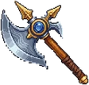 | Black Thorn | Rare | 30–45 | Long Spear | Poison | 127 |
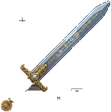 | Tongue of Flame | Rare | 30–45 | Sword | Flame | 112 |
| Totem Mace | Rare | 30–45 | Mace | Lightning | 117 | |
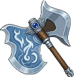 | Frost Axe | Epic | 45–55 | Axe | Frost | 117 |
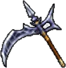 | Savage Claw | Legendary | 55–65 | Long Spear | Poison | 137 |
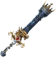 | Mirage | Legendary | 55–65 | Sword | Flame | 123 |
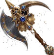 | Lightning Fist | Legendary | 55–65 | Mace | Lightning | 130 |
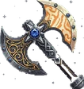 | Sky Giant's Axe Forged by giants, this axe is too heavy to swing with one hand — but for the one who can lift it, it falls as fast as lightning. | Mythic | 60–65 | Axe | Lightning | 134 |
| Glacier Breaker It once belonged to a king — now only one as strong as a king can wield it. | Mythic | 60–65 | Axe | Frost | 134 | |
| Storm Master Forged from the storm itself — with every swing, the sky falls silent for a moment. | Mythic | 60–65 | Sword | Lightning | 134 | |
| Hellbreaker Forged in hell's own furnace — every strike snuffs out one more soul. | Mythic | 60–65 | Mace | Flame | 131 | |
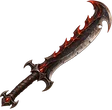 | Emberfang An ember-hardened, notched blade. A power-focused melee sword. | Uncommon | — | Sword | Flame | — |
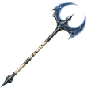 | Skyrend A long axe with a broad crescent head. Balanced between health and mana. | Epic | — | Axe | Lightning | — |
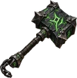 | Gravebreaker A war hammer with a heavy stone head that bolsters endurance. | Epic | — | Mace | Poison | — |
Rogue (Archer) weapons
| Weapon | Quality | Level | Type | Element | Attack (+0) | |
|---|---|---|---|---|---|---|
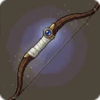 | Hunter's Bow | Common | 1–15 | Bow | Poison | 8 |
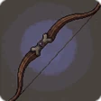 | Bamboo Bow | Common | 1–15 | Bow | Poison | 15 |
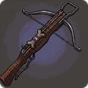 | Crossbow | Uncommon | 15–30 | Bow | Poison | 63 |
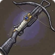 | Horn Crossbow | Uncommon | 15–30 | Bow | Poison | 74 |
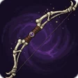 | Iron Crossbow | Rare | 30–45 | Bow | Poison | 84 |
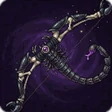 | Poison Thorn | Epic | 45–55 | Bow | Poison | 71 |
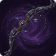 | Steel Bow | Legendary | 55–65 | Bow | Poison | 93 |
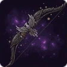 | Ember Bow | Mythic | 60–65 | Bow | Flame | 101 |
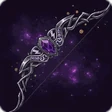 | Lightning String | Mythic | 60–65 | Bow | Lightning | 91 |
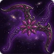 | Eagle's Gaze | Mythic | 60–65 | Bow | Poison | 95 |
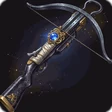 | Frost Bow | Mythic | 60–65 | Bow | Frost | 95 |
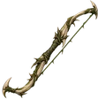 | Briarclaw A light starter bow with a short, thorny frame. | Common | — | Bow | Poison | — |
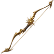 | Dawnstring A hunting bow with long, golden limbs and mana support. | Uncommon | — | Bow | — | — |
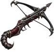 | Scorpion Sting An attack-focused crossbow with narrow steel arms and a scorpion-shaped frame. | Rare | — | Bow | Poison | — |
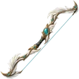 | Windwing A bow with feather-shaped limbs that offers health support. | Rare | — | Bow | Lightning | — |
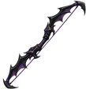 | Nightstring A mana-supporting war bow with sharply angled obsidian limbs. | Epic | — | Bow | Frost | — |
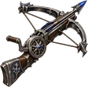 | Sky Harpoon A heavy, health-supporting crossbow with a round winding mechanism. | Epic | — | Bow | Lightning | — |
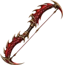 | Crimson Crescent A high-attack crimson war bow with dragon-scale limbs. | Legendary | — | Bow | Flame | — |
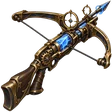 | Storm Eye A mechanical crossbow with a ring sight, offering health and mana support. | Legendary | — | Bow | Lightning | — |
Mage weapons
| Weapon | Quality | Level | Type | Element | Attack (+0) | |
|---|---|---|---|---|---|---|
| Wooden Staff | Common | 1–15 | Staff | — | 10 | |
| Apprentice Staff | Common | 1–15 | Staff | — | 13 | |
| Iron-Tipped Staff | Uncommon | 15–25 | Staff | — | 65 | |
| Silk-Wrapped Staff | Rare | 25–40 | Staff | — | 85 | |
| Crimson Rune Staff | Epic | 40–60 | Staff | — | 105 | |
| Shellweave Staff | Legendary | 60–65 | Staff | — | 120 | |
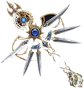 | Scorching Staff | Mythic | 60–65 | Staff | Flame | 87 |
| Frost Oasis Staff | Mythic | 60–65 | Staff | Frost | 87 | |
| Chaos Staff | Mythic | 60–65 | Staff | Lightning | 87 | |
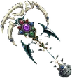 | Hellblood Staff | Mythic | 60–65 | Staff | Flame | 95 |
| Heaven's Garden Staff | Mythic | 60–65 | Staff | Lightning | 95 | |
| Northwind Staff | Mythic | 60–65 | Staff | Frost | 95 | |
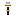 | Rainbow Staff | Mythic | 60–65 | Staff | — | 85 |
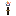 | Ancient Staff | Mythic | 60–65 | Staff | — | 60 |
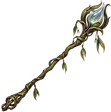 | Dewbranch Its translucent dewdrop head provides both health and mana support. | Common | — | Staff | Frost | — |
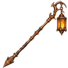 | Ember Lantern An attack-focused staff with a flame-bearing lantern head. | Uncommon | — | Staff | Flame | — |
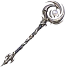 | Mooncoil Its spiraling moon head offers generous mana support. | Uncommon | — | Staff | Frost | — |
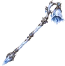 | Frostbell A health-focused frost staff with a crystal bell head. | Rare | — | Staff | Frost | — |
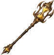 | Hourglass A mana-focused staff with a head filled with golden sand. | Rare | — | Staff | — | — |
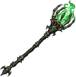 | Soullight The soul-light within its caged head offers health support. | Epic | — | Staff | Poison | — |
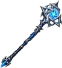 | Sky Seal A high-attack staff with a head of three interlocking seals. | Epic | — | Staff | Lightning | — |
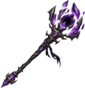 | Voidcrown Its shattered crown head offers high mana support. | Legendary | — | Staff | — | — |
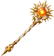 | Suncore A staff balanced between attack and mana, with a ray-shaped head. | Legendary | — | Staff | Flame | — |